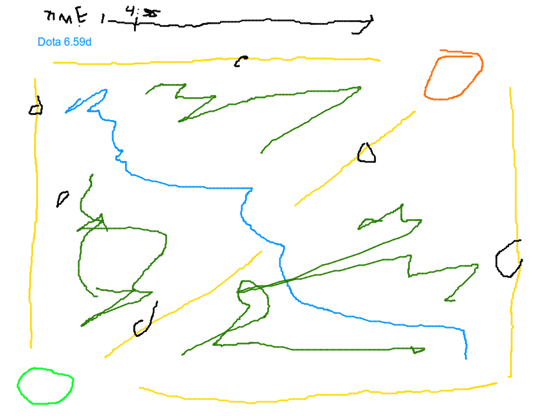

Computer science!
I placed the javascript image before the title, because I could easily
place it entirely in the head then. Alternatively I would have had to make
a javascript function and call it in the body. Javascript reads from top
to bottom and you cannot append to an object which does not exists.

Question 6
-
baby names is one of my all time favourite visualizations. The idea is
very simple, but the way it instantly shifts to match your entered letters
is very satisfying. Hovering the mouse over the graph shows data dependent
both on the name you are hovering over and the year on the x-axis. Clicking
on a name takes you to all names starting with those letters and as a bonus
feature you are forwarded to the name's etymology if you click it again.
It is hard to find negatives about this, but the first look at it, is not
particularly good. You are greeted with a mess of colors, a text entry box,
radio buttons and a strange color guide. The graph is however pretty clear
once you have made your first interactions with it.
-
Syria refuges is a visualization of violence is spreading in Syria. I
will only talk about the topmost visualization. It
does a great job conveying not only how much, but what kind of violence is
happening. It shows it day by day and it is mortifying to behold. You can
filter it to only show violence by certain groups or of certain kinds. It is
very effective at showing just how quickly the crisis escalated (the data
stopped in January 2015). If I were to nitpick it, I dislike that when you
hover your mouse over a country it gives the impression of being clickable,
but only shows the name. This would be alright, if it kept being highlighted
while I had my mouse over a dot on the map. However it disappears and I
cannot click the dot, nor see the name of the country. The color choices
were made for effect, but the gray on gray with dramatic red does make the
thing blur a bit.
Question 7
Lasse Madsen
- I would like to visualize some video game data, maybe try to show Warcraft
3 replays. I know they have a format where you can read every action taken in
the game. I could just use random replays.
- It would show what happened in a game. You could highlight particular
events and perhaps find the "interesting" parts.
- While Warcraft 3 is, if not dead, dying I think a lot of people would at
the very least find it cool.
Mockup
